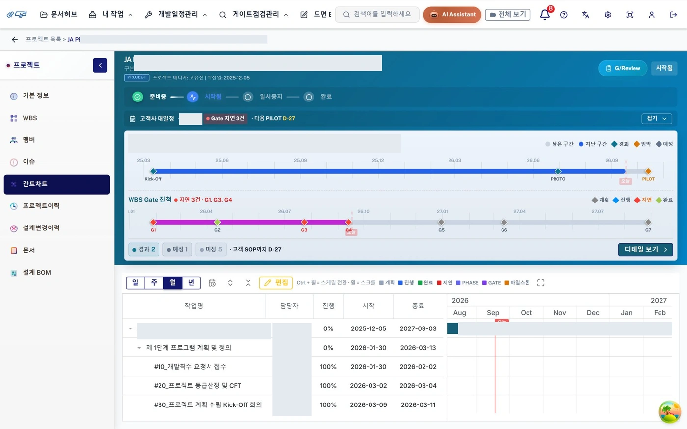

고객 일정·작업 구조
실제 마일스톤과 WBS를 넣고 계획 기간·담당자·진척 표시를 확인합니다.
고객 마일스톤과 WBS·간트 차트를 같은 프로젝트에서 관리합니다.
담당 업무의 진척과 게이트별 계획·실적을 확인해 점검할 일정을 찾습니다.

고객 일정·담당 업무·게이트 점검을 같은 프로젝트에서 확인
비주얼 간트차트로 일정과 WBS를 한눈에.
고객 마일스톤과 게이트의 지연 상태를 확인.
담당 업무와 프로젝트 진행 현황을 확인.
단계별 승인·체크리스트 기반 품질 관리.
이슈의 담당자·진행 상태·조치 이력을 확인.
전사 이슈 통합 등록·추적, 재발 방지.
고객 마일스톤을 기준으로 작업·담당자·진척을 관리합니다. 간트 차트와 게이트 점검으로 현재 확인할 일정과 산출물을 찾습니다.
작업별 계획 기간과 진척을 간트 차트로 확인하며 프로젝트 일정을 관리합니다.
선행관계 표시·저장을 지원하며, 일정 자동 재계산은 포함하지 않습니다.
실제 마일스톤과 WBS를 넣고 계획 기간·담당자·진척 표시를 확인합니다.
단계별 점검 기준과 제출 자료, 프로젝트의 이슈·문서 연결을 검토합니다.
선행관계 표시·저장을 지원합니다. 일정 자동 재계산을 전제로 안내하지 않습니다.
귀사의 프로젝트로 일정과 담당 업무, 지연 항목을 확인해 보세요. 필요한 관리 범위를 실제 화면으로 함께 살펴봅니다.